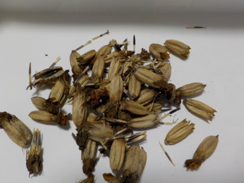
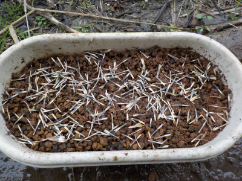
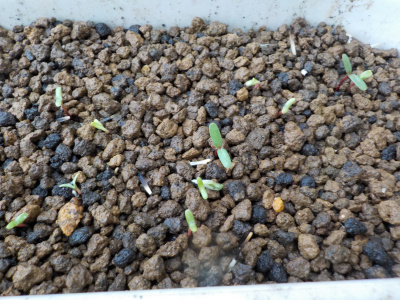
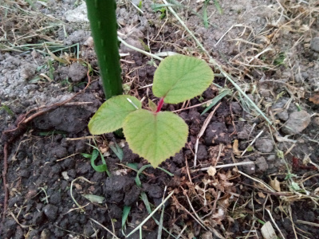
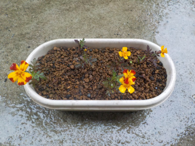
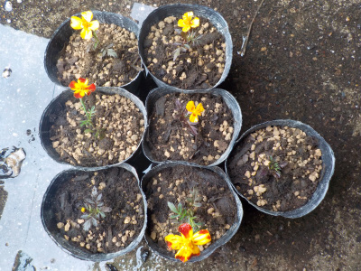
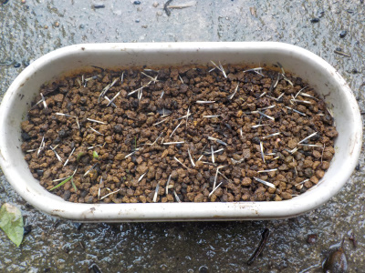
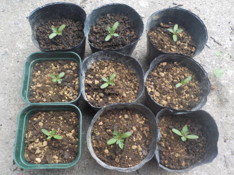
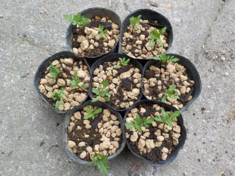
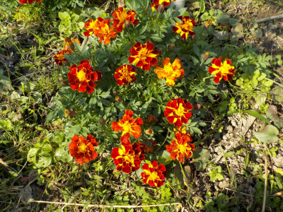

マリーゴルドの種を採りました。
更新日 : 2021/01/31

イチゴの本を読んでいたら、マリーゴールドを植えましょうと書いてあったので種を取りました。
これでマリーゴールドが大量生産できます。
4月になったらポットに蒔いて、育ったらあちこちに植えようと思っています。
更新日 : 2021/01/31

イチゴの本を読んでいたら、マリーゴールドを植えましょうと書いてあったので種を取りました。
これでマリーゴールドが大量生産できます。
4月になったらポットに蒔いて、育ったらあちこちに植えようと思っています。
更新日 : 2021/03/28

種をどれくらいの密度で蒔いていいのかわからないので多めに蒔きました。
種はまだ沢山残っています。
ちょっとづつポットやプランターで育てるのは面倒なので、畑を耕して種を蒔こうかと思っています。
更新日 : 2021/04/04

このごろ気温が高かったせいか、もう芽がでました。
しっかりしてそうな葉っぱなので、直播きしても育ちそうな感じがします。
更新日 : 2021/04/20

実生のキウイを植えた周りがちょっと空きスペースになっていました。
雑草が生えていないので、ここに種を蒔いたら育つかなと思いパラパラとマリーゴールドの種を蒔きました。
育つとうれしい。
更新日 : 2021/06/13

小さいプランターで育ててたマリーゴールドの花が咲きました。
株が小さくてひょろひょろしてても花が咲くんですね。

庭や畑に植えるつもりなのでポットに分けました。
だいぶ大きくなっていたため、植替えの時に根っこがブチブチ切れてしまいました。
もっと苗が小さい状態で植え替えした方がよさそうです。

プランターに再び種を蒔いで数を増やします。
更新日 : 2021/06/26

まだ苗が小さいのでポットに植え替えがしやすかったです。
これくらいのサイズで植え替えすると根っこを傷めないでいいですね。
前回花が咲いてから植替えしたものは2本枯れてしまいました。
更新日 : 2021/07/18

マリーゴールド増殖中ですが、この作業って何時までやっていいんでしょうね。
8月とか9月に種蒔きしたものでも大きく育つのかな？
まだ種はあのでもうちょっと続けると思います。
今回から1ポットに2株以上植えることにしました。土の節約です。
更新日 : 2021/10/31

地植えにしたマリーゴールドがあちこちでこんもりと半球状態で開花しています。
畑が賑やかになっていいですね。来年もあちこちに植えようと思います。
センチュウとかコンパニオンプランツとか益虫のことなんてどうでもいい。ただ植えよう。